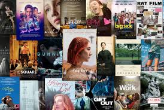
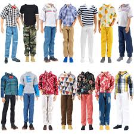

I Movies/Clothing/Songs/PC's/Bikes
1.Movies

- Movies are a powerful form of storytelling that combine visuals, sound, and dialogue.
- They can entertain, educate, and inspire people across cultures and ages.
- Different genres like action, comedy, drama, and sci-fi cater to varied tastes.
- Movies often reflect society, emotions, and human experiences.
- With streaming platforms, movies are now more accessible than ever.
Mohammad Affanuddin!
2.Clothing

- Clothing protects the body from weather, injury, and exposure.
- It reflects personal style, culture, and identity.
- Different materials suit different seasons and activities.
- Fashion trends in clothing change over time and by region.
- Clothing can also show status, profession, or religious beliefs.
Mohammad Affanuddin!
3.Songs
- Songs are musical compositions that express emotions, stories, or ideas.
- They combine lyrics, melody, and rhythm to create a mood.
- Songs can be used for entertainment, worship, or cultural expression.
- Different genres like pop, classical, and folk appeal to different audiences.
- Songs often bring people together and create lasting memories.
Mohammad Affanuddin!
4.PC's

- A PC is a versatile device used for work, study, gaming, and entertainment.
- It consists of hardware components like CPU, RAM, and storage.
- PCs run on operating systems like Windows, macOS, or Linux.
- They can connect to the internet for browsing, communication, and downloads.
- PCs are essential tools in modern education, business, and creative fields.
Mohammad Affanuddin!
5.Bikes
- Bikes are two-wheeled vehicles used for transport, fitness, and fun.
- They are eco-friendly and don’t require fuel like cars do.
- Biking is a great form of exercise for the body and mind.
- There are different types of bikes like road, mountain, and electric bikes.
- Bikes are affordable and ideal for short-distance travel.
Mohammad Affanuddin!